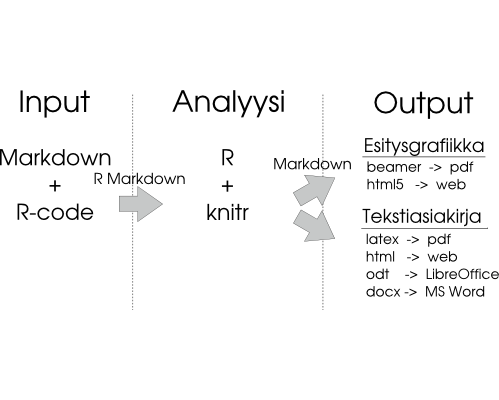
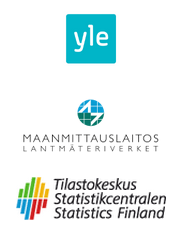
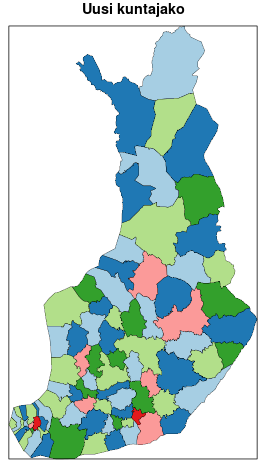
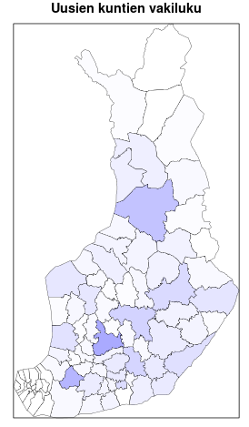
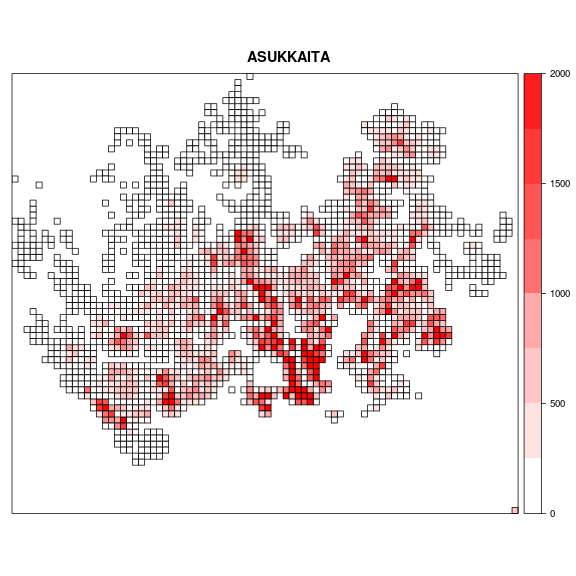

- Helsingin yliopisto, biotieteiden laitos, Conservation Biology Informatics Group
- Suomen ympäristökeskus, luontoympäristökeskus
- Louhos-yhteisö
R, avoin data ja toistettavat analyysit
Geoinformatiikan tutkimuspäivät 2013
Joona Lehtomäki, Louhos
Ongelma?
Tutkimuksessa
Kuilu julkaisun ja toistettavuuden välillä
Päätöksenteossa
Onko päätöksenteko palautettavissa aineistoon ja tutkimuksiin?

- Avoimen lähdekoodin ohjelmointikieli ja tilastollisen laskennan ympäristö
- Komentorivipohjainen ja vuorovaikutteinen
- Grafiikkaominaisuudet
- Laaja käyttäjä- ja kehittäjäyhteisö
- Rakenteeltaan modulaarinen ja laajennettavissa

Liikenne sähköpostilistoilla (listerv)
Lähde: r4stats.com
Photo by premus on Flickr, CC-BY
6275
Lähde: r4stats.com
R-pakettien lukumäärä 19.3.2013
R ja toistettavuus


Lähde: Markus Kainu
Lähde: XKCD 1168
sorvi - suomalaisen avoimen datan R-paketti
- Datan saatavuus joustavat datan haku- ja putsausrutiinit
- Läpinäkyvyys ja toistettavuus kaikki vaiheet yhdessä koodissa
- Uusia tutkimusvälineitä sovelluksia täydentämään
- Vuorovaikutteisuus nopea datan seulonta ja visualisointi
- Lokalisoitu kotimaisiin tarpeisiin
datawiki - dataopas esimerkkeihin
- Datakatalogi mukana n. 20 kotimaista tietolähdettä
- Käyttöesimerkit toistettavat esimerkit sorvilla
- Kehittäjäyhteisön tuki kaikki voivat osallistua
Uusi kuntajako: yhdistely ja visualisointi



Lähde: Louhos-blogi
HSY:n väestöruudukko pk-seudulla

Toistettavuus ja läpinäkyvyys
paranee kun avaamme ja jaamme
dataa
koodin
osaamista